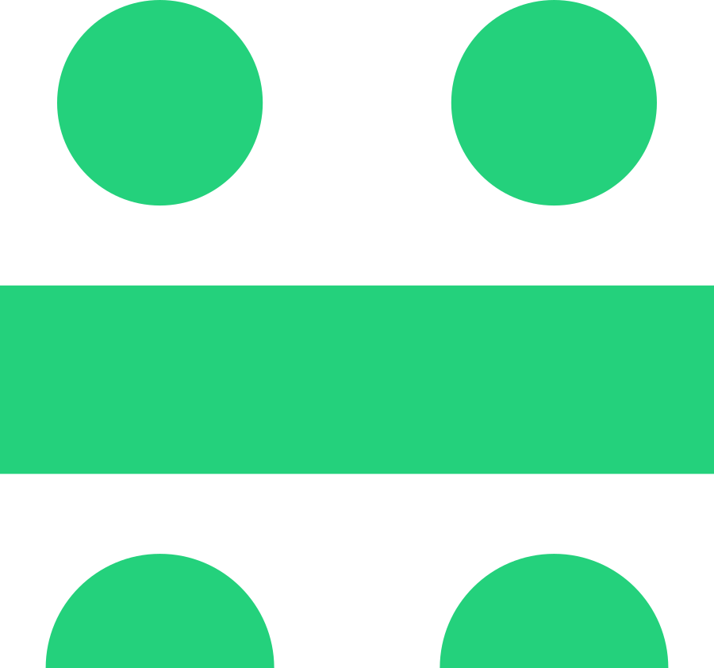
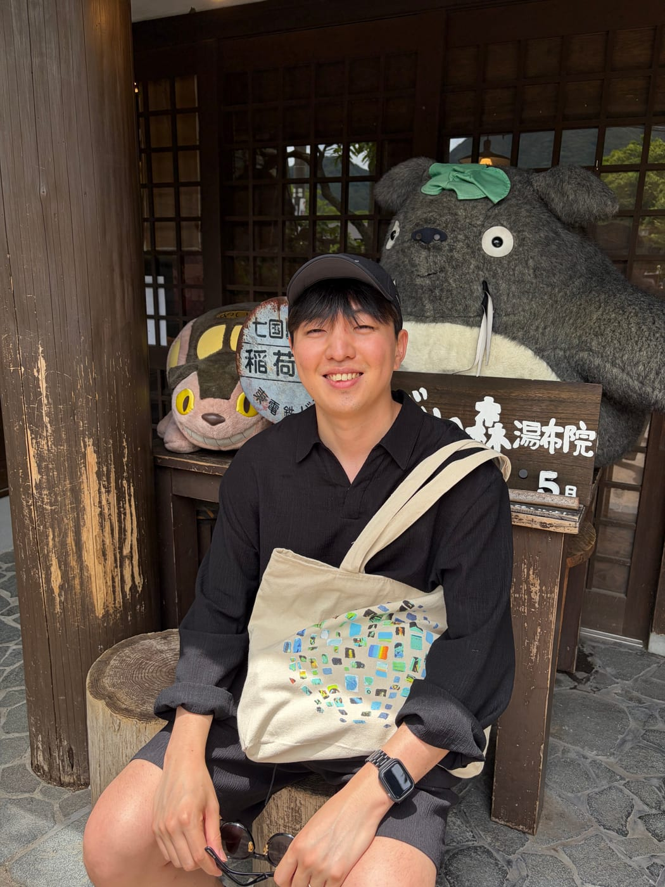

Holiday Robotics
Senior Member of Technical Staff
–Present
Founding member, Embodied AI Team.
Robot-use agents and synthetic data generation.

PhD — KAIST AI
BS — KAIST Mathematical Science
Minor: Intellectual Property
I am a Senior Member of Technical Staff at Holiday Robotics, working on embodied AI, with a focus on robot-use agents and the data that trains them. I received my Ph.D. in AI from KAIST (카이스트), where I was advised by Prof. Se-Young Yun in the OSI Lab.
My research background spans reinforcement learning, LLM alignment, and efficient inference.
I love coffee, running, and long walks at Seoul Forest, and I enjoy the Seongsu neighborhood culture. 커피를 좋아하고, 러닝과 서울숲 산책을 즐기며 성수동 문화를 좋아합니다.
Contact: kimtaehyeon610 [at] gmail [dot] com

Senior Member of Technical Staff
–Present
Founding member, Embodied AI Team.
Robot-use agents and synthetic data generation.
Superintelligence Lab
–
Tech Lead (Jan.–Jun. 2026)
Squad Lead (Sep.–Dec. 2025)
Research Scientist (Apr.–Aug. 2025)
RL, efficient and effective LLM inference, search agents, and adaptive reasoning.
Worked w/ Moontae Lee.
Ph.D. Research Intern
–
Efficient LLM inference.
Worked with Adrian Benton and Ananda Theertha Suresh.
Ph.D. Research Intern
–
Privacy-preserving federated learning; worked with Eric Lin.
Ph.D. Research Intern
–
Worked with Heesoo Myeong on efficient models for autonomous driving.
I study how agents use robot skills to carry out physical tasks, and how data and evaluation can improve those skills. 에이전트가 로봇의 스킬을 활용해 실제 작업을 수행하고, 데이터와 평가를 통해 그 스킬을 개선하는 방법을 연구합니다.
Agents that select and compose robot skills to carry out physical tasks, using observations and execution feedback to guide their next action.
Tests that expose real failure modes, not a fixed task suite.
Synthetic robot trajectories generated with inverse kinematics (IK) and reinforcement learning (RL), alongside auto-labeling of real-world robot data. Evaluation feedback guides data collection and policy improvement.
Contrastive Thinking Decoding: Steering Answer Generation in Reasoning Models
Efficiently Learning To Reason or Not to Reason: Root-token Policy Optimization for Adaptive Thinking
Multi-Drafter Speculative Decoding with Alignment Feedback
Instructive Decoding: Instruction-Tuned Large Language Models are Self-Refiner from Noisy Instructions
Exploring & Improving Multi-token Prediction (Block Draft) in Language Modeling
Navigating Data Heterogeneity in Federated Learning A Semi-Supervised Federated Object Detection
FINE Samples for Learning with Noisy Labels
Comparing Kullback-Leibler Divergence and Mean Squared Error Loss in Knowledge Distillation
† co-corresponding authors; * equal contribution.